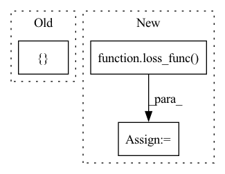

Pattern ID :388

Before Change
print("Evaluation in epoch: %4d / %4d\t, test counter: %d test loss: %.4f\taverage time: %.4lf\tavg render time:%lf\tremaining eval time:%s"%(
ep, epochs, test_cnt, test_loss.item() / 2, eval_timer.get_mean_time(), render_timer.get_mean_time(), eval_timer.remaining_time(epochs - ep - 1)
))
save_image([coarse_result, train_result, test_result_1, test_result_2], "./output/result_%03d.png"%(test_cnt), nrow = 2)
// ======== Saving checkpoints ========
torch.save({
"model": coarse_net.state_dict()},
After Change
fine_rendered, _ = NeRF.render(fine_rgbo, fine_lengths, fine_samples[:, :, 3:6].norm(dim = -1))
opt.zero_grad()
loss:torch.Tensor = loss_func(coarse_rendered, rgb_targets) + loss_func(fine_rendered, rgb_targets)
train_timer.toc()
loss.backward()
In pattern: SUPERPATTERN
Frequency: 3
Non-data size: 3
Instances
Fragment ID: 2283713
Project Name: enigmatisms/nerf
Commit Name: 5bf2199afe3d4eff27be923b0e6d62a3118af597
Time: 2022-04-13
Author: 984041003@qq.com
File Name: train.py
M Class Name: AnonimousClass
N Class Name: AnonimousClass
M Method Name: main(0)
N Method Name: main(0)
M Parent Class:
N Parent Class:
M File Name: train.py
N File Name: train.py
M Start Line: 66
M End Line: 188
N Start Line: 73
N End Line: 196
'>
Before Change
// build optimizer
optimizer = optimizer_setting(model, config)
// build dataset_train
transforms_train = [
ResizeStepScaling(min_scale_factor=0.5,
max_scale_factor=2.0,
scale_step_size=0.25),
RandomPaddingCrop(crop_size=config.DATA.CROP_SIZE,
img_padding_value=(123.675, 116.28, 103.53),
label_padding_value=255),
RandomHorizontalFlip(prob=0.5),
RandomDistort(brightness_range=0.4,
contrast_range=0.4,
saturation_range=0.4),
Normalize(mean=[123.675, 116.28, 103.53], std=[58.395, 57.12, 57.375])
]
dataset_train = get_dataset(config, data_transform=transforms_train, mode="train")
batch_sampler = paddle.io.DistributedBatchSampler(
dataset_train,
After Change
logits_list = ddp_model(images)
else:
logits_list = model(images)
loss_list = loss_func(logits_list, labels)
loss = sum(loss_list)
loss.backward()
optimizer.step()
lr = optimizer.get_lr()
'>
Fragment ID: 2283707
Project Name: br-idl/paddlevit
Commit Name: 122601a13df2da26009f2edddf3ed0ca678faaf2
Time: 2021-12-02
Author: 49911294+GuoQuanhao@users.noreply.github.com
File Name: semantic_segmentation/train.py
M Class Name: AnonimousClass
N Class Name: AnonimousClass
M Method Name: main(0)
N Method Name: main(0)
M Parent Class:
N Parent Class:
M File Name: semantic_segmentation/train.py
N File Name: semantic_segmentation/train.py
M Start Line: 92
M End Line: 214
N Start Line: 35
N End Line: 142
'>
Before Change
prog_bar=True,
logger=True,
)
return {
"loss": tot_loss,
"heatmap_loss": heatmap_loss,
"pca_loss": pca_loss,
} // remember to detach heatmap/pca loss
After Change
tot_loss = 0.0
tot_loss += supervised_loss
for loss_name, loss_func in self.loss_function_dict.items():
add_loss = self.loss_params[loss_name]["weight"] * loss_func(
predicted_us_keypoints,
**self.loss_params[loss_name]
)
tot_loss += add_loss
// log individual unsupervised losses
self.log(
loss_name + "_loss",
'>
Fragment ID: 2283710
Project Name: danbider/lightning-pose
Commit Name: b6eb45c9e6b36a0aadf7793a09800b67c5da3d12
Time: 2021-09-21
Author: ubuntu@ip-172-31-72-121.ec2.internal
File Name: pose_est_nets/models/new_heatmap_tracker.py
M Class Name: SemiSupervisedHeatmapTracker
N Class Name: SemiSupervisedHeatmapTracker
M Method Name: training_step(3)
N Method Name: training_step(3)
M Parent Class: HeatmapTracker
N Parent Class: HeatmapTracker
M File Name: pose_est_nets/models/new_heatmap_tracker.py
N File Name: pose_est_nets/models/new_heatmap_tracker.py
M Start Line: 263
M End Line: 306
N Start Line: 261
N End Line: 301